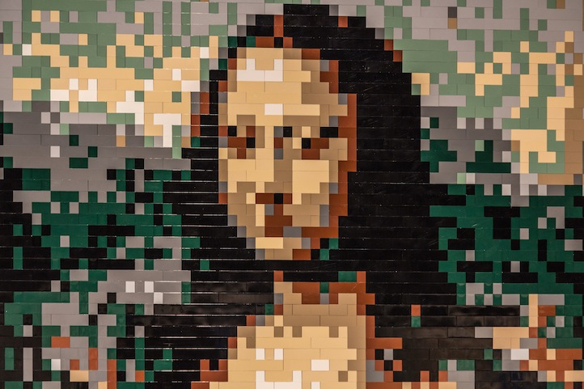
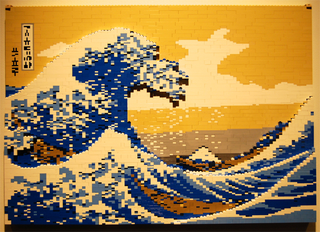
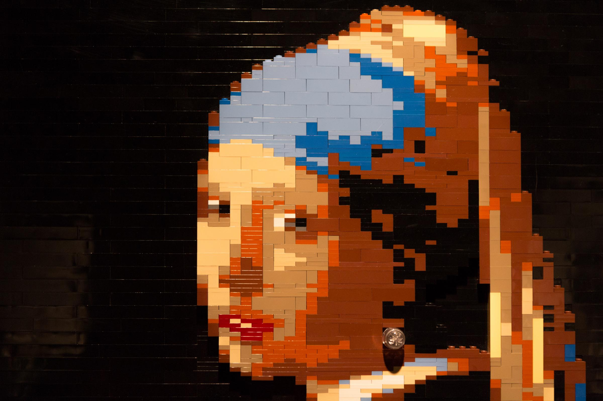

Here is a selection of some of Cameron's favorite creations he has made from Lego.
|
Right: An original adaptation of Da Vinci's "Mona Lisa". She's actually
looking at you now!
|
 |
|  |
Left: A reproduction of "The Great Wave off Kanagawa" by Katsushika Hokusai
from the 19th Century.
|
|
Right: A reproduction of "Girl with a Pearl Earring" by Johannes Vermeer,
1665. Sadly there's no pearl Lego pieces, so we had
to get creative and tack on an actual earring.
|
 |
As said on previous page, all these Lego creations are actually by Natan Sawaya!